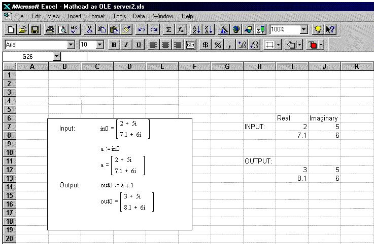

Excel Example |
You can use an application such as Microsoft Excel to access Mathcad's OLE Automation interface using Excel's VBA environment. The following example sets the variable in0 in a Mathcad OLE object to a complex number, allows Mathcad to perform a calculation, and puts the answer back into Excel using the Embedding API.
For example, the following is an Excel worksheet communicating with Mathcad through a VBA macro. The data stored in cells I7 through J8 are passed into the Mathcad variable in0. Mathcad performs a calculation (in this case, trivially adding 1 to the values, but you can use Mathcad to perform any calculation you can do in Mathcad). The results stored in the Mathcad variable out0 are passed into the cells I12 through J13.

The VBA macro looks like this:
Sub UpdateWorksheet()
Dim MathcadObject As Object
Dim outRe, outIm As Variant
Dim inRe, inIm As Variant
'Set a reference to the Mathcad object on the sheet
Set MathcadObject = ActiveSheet.OLEObjects(1).Object
'Read in values to be passed from Excel to Mathcad
inRe = ActiveSheet.Range("I7:I8").Value
inIm = ActiveSheet.Range("J7:J8").Value
'end the values over to Mathcad, assign them to variable in0,
'recalculate, and read the results from out0 back into Excel
Call MathcadObject.SetComplex("in0", inRe, inIm)
Call MathcadObject.Recalculate
Call MathcadObject.GetComplex("out0", outRe, outIm)
' Place the result values into the chosen Excel cells
ActiveSheet.Range("I12:I13").Value = outRe
ActiveSheet.Range("J12:J13").Value = outIm
End Sub
Note that in order to pass real data, you should have cell(s) containing zeros for the imaginary part.